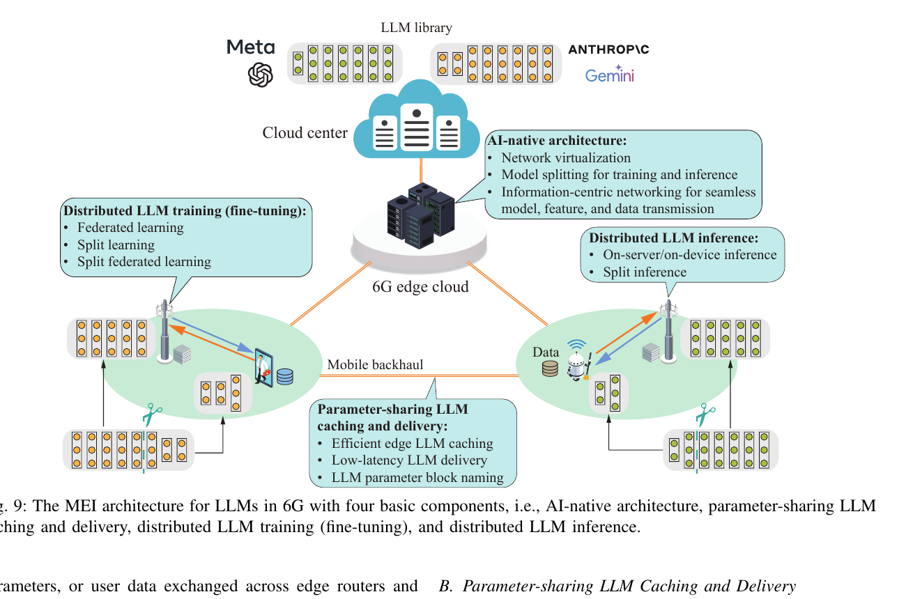
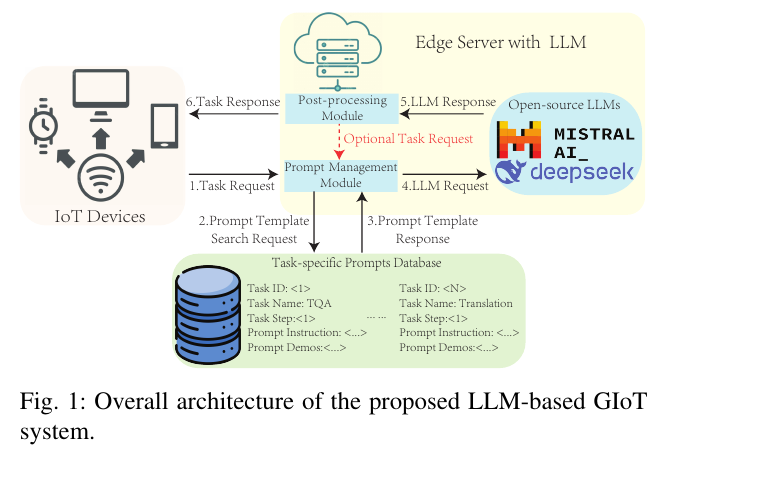
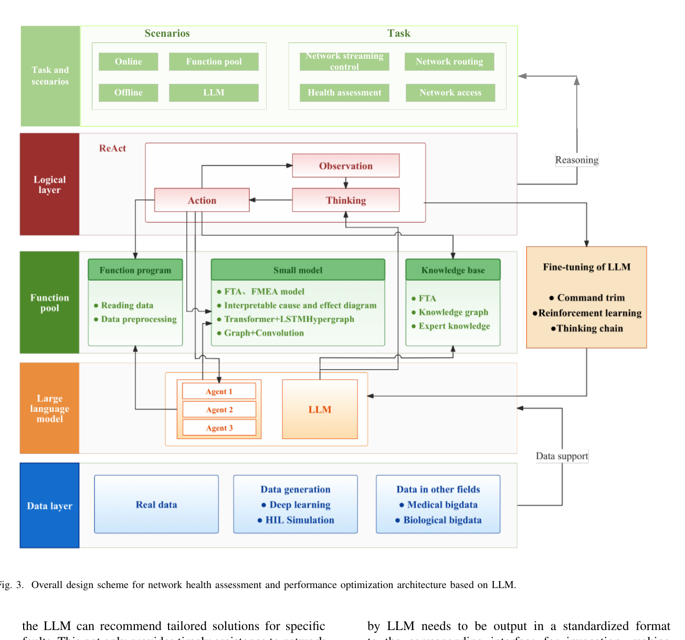
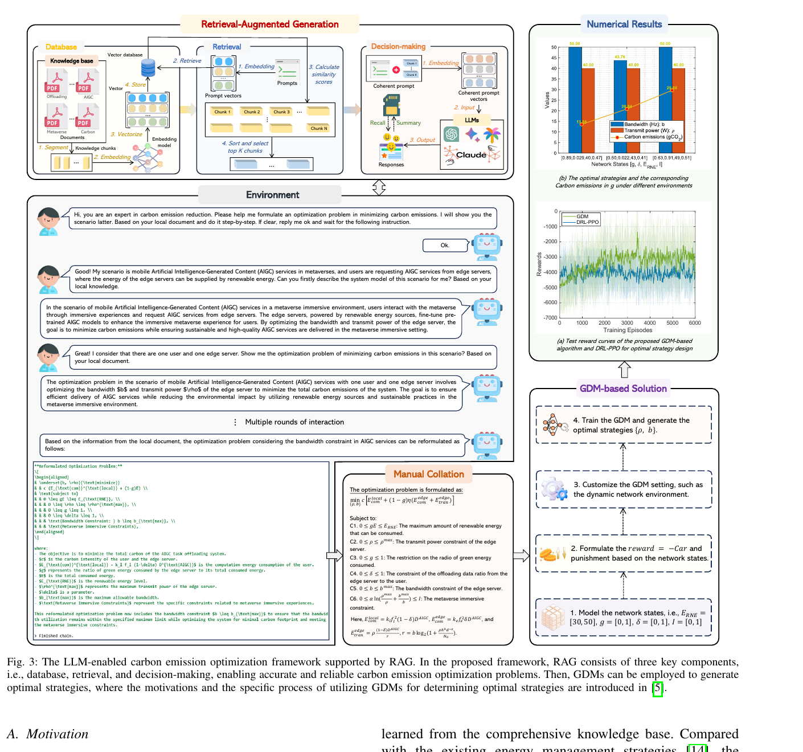
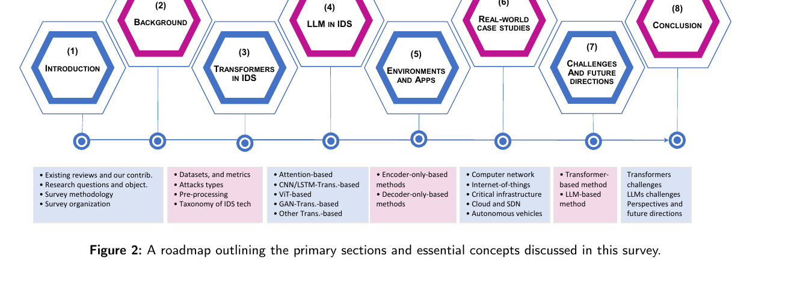

领域顶级综述
238 次引用
Mobile Edge Intelligence for Large Language Models: A Contemporary Survey
研究重点：边缘智能、模型压缩、缓存与传输、分布式训练、边缘推理、6G
最贴近物联网工程中的现实约束：终端算力、存储、带宽、能耗和云边端协同。非常适合作为整个方向的总览与系统架构参考。
Literature briefing · 2026
聚焦“大模型如何进入物联网工程”的六条主线：边缘部署、提示词系统、网络运维、工业物联网、入侵检测与低碳 AIoT。
新增 · 牛肉风干制品加工技术文献库 →有，而且已经形成较完整的研究版图。最值得先看的不是单篇“应用案例”，而是权威综述加代表性系统论文：先建立架构认识，再看边缘部署与工业场景。
按“期刊质量、主题贴合度、可读性与是否提供开放版本”综合排序。引用次数来自 OpenAlex，统计日期为 2026-10-22，不等同于 Google Scholar 或期刊影响因子。
研究重点：边缘智能、模型压缩、缓存与传输、分布式训练、边缘推理、6G
最贴近物联网工程中的现实约束：终端算力、存储、带宽、能耗和云边端协同。非常适合作为整个方向的总览与系统架构参考。
研究重点：物联网安全、Transformer、LLM、入侵检测、异常检测
把 Transformer/LLM 用到网络与物联网入侵检测的模型、数据集、评价指标和部署场景串成完整路线图，适合做安全方向综述或选题依据。
研究重点：6G、网络运维、健康评估、ReAct、性能优化
直接回答“大模型怎样参与物联网网络运维”，给出 LLM 驱动的场景层、逻辑层、函数池、模型层和数据层架构。
研究重点：本地开源 LLM、边缘部署、提示词管理、后处理、Table-QA
给出可落地的 GIoT 系统：物联网设备请求任务，边缘服务器调用本地开源模型，由提示词管理器和后处理模块提升推理质量，适合做毕业设计或系统原型。
研究重点：工业物联网、云边协同、LLM 推理任务卸载、强化学习、可信身份
把工业物联网里“模型放哪里、推理任务如何调度、怎样兼顾信任与能耗”做成了可量化的问题，适合系统工程、边缘计算和资源调度方向。
研究重点：工业物联网、数字孪生、多智能体 LLM、故障诊断、老旧设备改造
把 LLM 多智能体接入 IIoT 实时数据和数字孪生，覆盖可视化、故障诊断与专家问答，比纯算法论文更接近物联网工程落地。
研究重点：DDoS 检测、物联网宏编程、传感器数据处理
最适合作为入门材料：用三个案例展示 LLM 如何把物联网系统变成自然语言接口，覆盖识别、编程和数据理解三类任务。
研究重点：LLM for IoT、LLM on IoT、边缘微调、边缘推理、拆分联邦学习
用“LLM for 6G IoT / LLM on 6G IoT”两条主线解释应用层智能与边缘部署，适合写研究背景和架构章节。
研究重点：低碳 AIoT、RAG、生成式扩散模型、带宽与功率优化
把 LLM 的推理与生成能力用于低碳 AIoT 的资源优化，适合可持续物联网、绿色边缘计算和生成式优化方向。
图片取自作者开放版本或可公开访问版本，用来快速理解论文架构。正式排版与最终文字请以 DOI 页面为准。





主题词包括 “large language models”“LLM”“Internet of Things”“Industrial IoT”“edge intelligence”“6G”“digital twin”“intrusion detection”。先在 OpenAlex 中按标题/摘要检索并限定期刊来源，再按引用量排序；随后用 Crossref 核验作者、期刊和 DOI，用 arXiv 核验开放版本及录用说明。检索日期：2026-10-22。
限制：部分正式期刊版本需要学校或机构订阅，本报告仅提供开放作者版或可公开访问版本；期刊图表可能因版权或版面差异与正式出版版本略有不同。